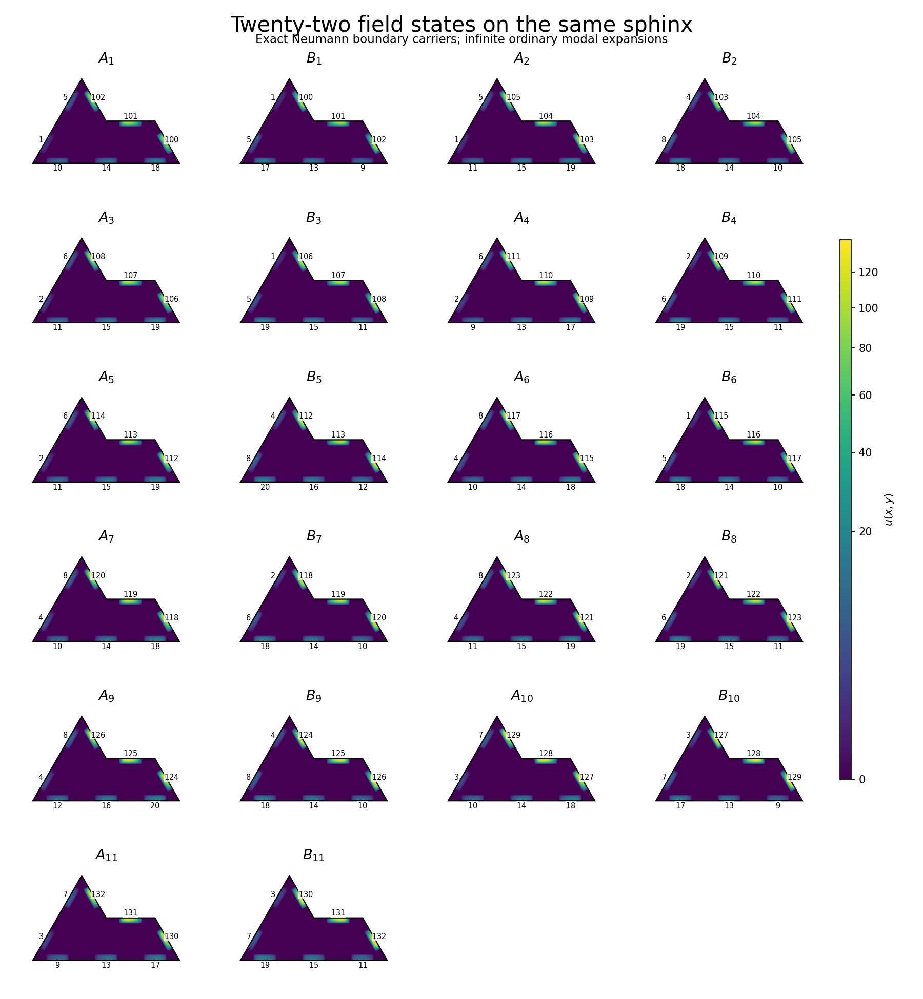
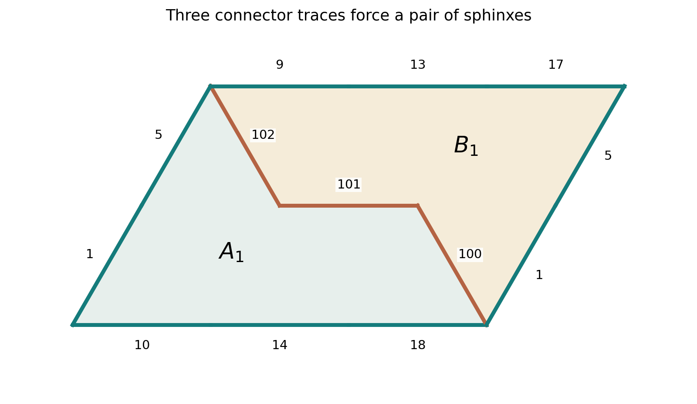
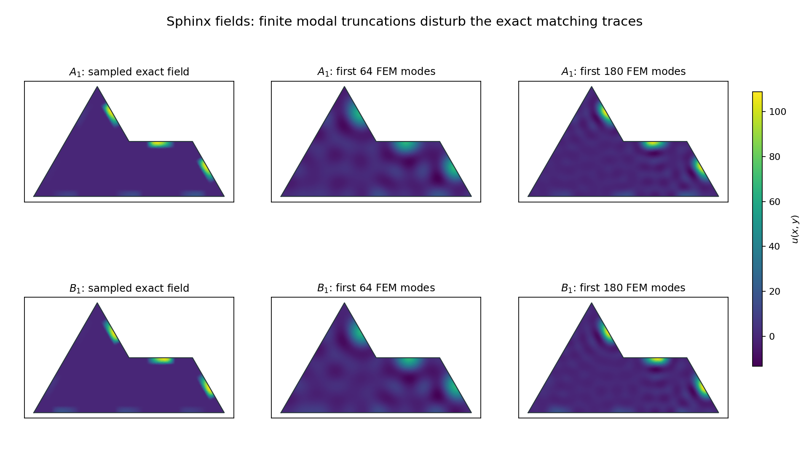

Sphinx · updated 11 October 2026
The sphinx: boundary matching and modes
An explicit palette of twenty-two smooth Neumann fields forces aperiodicity of the decorated sphinx tiling. Each field has an infinite expansion in ordinary sphinx eigenmodes. Finite sums suffice under a separate tolerance rule. Enforcing the sphinx substitution itself, or using finitely many modes with exact matching, remains unfinished work.
What is established
Place exact sphinx hexiamonds on the triangular lattice. Allow the six rotations by multiples of \(\pi/3\), exclude reflections, and require each tile to carry one of twenty-two fixed total fields. Requiring scalar boundary values to match admits infinite tilings and excludes every nonzero translation period of the decorated tiling.
The ordinary boundary condition is homogeneous Neumann for every field: \(\partial_\nu u=0\). The allowed palette is an additional discrete restriction on modal coefficients. Neumann conditions alone, or permission to choose arbitrary superpositions, do not force aperiodicity.
In this construction the tile outlines still repeat. The field states carry the nonperiodic information. It encodes the known Jeandel–Rao system through pairs of sphinxes; it does not enforce the sphinx substitution. A construction whose underlying sphinx arrangement is forced to follow that hierarchy is the second route below.
| Question | Current answer |
|---|---|
| Every physical tile an exact sphinx? | Yes; no auxiliary geometric tiles in this construction. |
| Dirichlet or Neumann boundary condition? | Exact homogeneous Neumann, on every boundary segment. |
| Infinite existence and forced aperiodicity? | Yes for the finite decorated palette, under the declared placement rules. |
| Finite palette of fields? | Yes, twenty-two. |
| Finite number of eigenmodes per field? | The exact profiles require infinitely many; finite sums suffice under the separate tolerance rule below. |
| One frequency, or matching separately at every frequency? | No such result is established. |
| Forcing the natural sphinx hierarchy? | Published matching rules exist, but their boundary-only modal transfer is not completed here. |
Independent values on the eight unit segments
Use the triangular-lattice basis \(b_1=(1,0)\), \(b_2=(1/2,\sqrt3/2)\). Axial coordinates \((a,b)\) mean \(ab_1+bb_2\). The polygon vertices, in counterclockwise order, are
\[ (0,0),\ (3,0),\ (2,1),\ (1,1),\ (0,2). \]Its area is \(3\sqrt3/2\), and it consists of six unit equilateral triangles. Split its boundary into eight unit segments, keeping their counterclockwise directions.
All eight segment coordinates
| Segment | Directed endpoints, in axial coordinates |
|---|---|
| \(e_0\) | \((0, 0)\to(1, 0)\) |
| \(e_1\) | \((1, 0)\to(2, 0)\) |
| \(e_2\) | \((2, 0)\to(3, 0)\) |
| \(e_3\) | \((3, 0)\to(2, 1)\) |
| \(e_4\) | \((2, 1)\to(1, 1)\) |
| \(e_5\) | \((1, 1)\to(0, 2)\) |
| \(e_6\) | \((0, 2)\to(0, 1)\) |
| \(e_7\) | \((0, 1)\to(0, 0)\) |
Define the even compact bump and asymmetric profile
\[ K(z)=\begin{cases}\exp\!\left(1-\dfrac{1}{1-z^2}\right),&|z|<1,\\0,&|z|\ge1,\end{cases}\qquad G_\sigma(s)=K\bigl(4(s-\tfrac12)\bigr)e^{2\sigma(s-1/2)},\quad\sigma\in\{-1,1\}. \]For physical segment endpoints \(p_j,q_j\), outward unit normal \(\nu_j\), and unit tangent \(\tau_j=q_j-p_j\), set
\[ s_j(x)=(x-p_j)\cdot\tau_j,\qquad r_j(x)=-(x-p_j)\cdot\nu_j,\qquad u_{a,\sigma}(x)=\sum_{j=0}^{7}a_jG_\sigma\bigl(s_j(x)\bigr)K\bigl(8r_j(x)\bigr). \]The middle-half support stays away from every vertex. The exact squared distance from a support segment to any other side is at least \(3/64\); the squared separation between distinct support segments is at least \(1/16\). Inward collars of width \(1/8\) therefore avoid other sides and have disjoint open supports. On segment \(j\), the boundary value is exactly \(a_jG_\sigma\), and its normal derivative is exactly zero because \(K'(0)=0\). Every field is smooth up to the boundary and zero near the corners.
\[ G_{-1}(s)=G_1(1-s),\qquad \frac{G_1(s)}{G_{-1}(s)}=e^{4(s-1/2)}\quad(1/4<s<3/4). \]Thus equal nonzero profiles determine both their amplitude and their direction. Equal boundary values also give equal tangential derivatives; zero outward flux on both sides supplies flux cancellation. The glued fields are static multiple-eigenvalue superpositions.
The finite coefficient palette
For each index \(t\) with colors \((w,e,s,n)\), use
\[ V_r(c)=1+4r+c\quad(r=0,1),\qquad H_r(c)=9+4r+c\quad(r=0,1,2),\qquad I_j(t)=100+3(t-1)+j\quad(j=0,1,2). \] \[ A_t=u_{a_t^A,1},\quad a_t^A=(H_0(s),H_1(s),H_2(s),I_0(t),I_1(t),I_2(t),V_1(w),V_0(w)), \] \[ B_t=u_{a_t^B,-1},\quad a_t^B=(H_2(n),H_1(n),H_0(n),I_2(t),I_1(t),I_0(t),V_0(e),V_1(e)). \]The eleven color quadruples are Jeandel–Rao's Figure 4; their Theorem 3 establishes infinite existence and aperiodicity for that matching system. [1] The encoding on exact sphinx shapes and its reduction are derived here.
The eleven source color quadruples
| \(t\) | \(w\) | \(e\) | \(s\) | \(n\) |
|---|---|---|---|---|
| \(1\) | \(0\) | \(0\) | \(1\) | \(0\) |
| \(2\) | \(0\) | \(3\) | \(2\) | \(1\) |
| \(3\) | \(1\) | \(0\) | \(2\) | \(2\) |
| \(4\) | \(1\) | \(1\) | \(0\) | \(2\) |
| \(5\) | \(1\) | \(3\) | \(2\) | \(3\) |
| \(6\) | \(3\) | \(0\) | \(1\) | \(1\) |
| \(7\) | \(3\) | \(1\) | \(1\) | \(1\) |
| \(8\) | \(3\) | \(1\) | \(2\) | \(2\) |
| \(9\) | \(3\) | \(3\) | \(3\) | \(1\) |
| \(10\) | \(2\) | \(2\) | \(1\) | \(0\) |
| \(11\) | \(2\) | \(2\) | \(0\) | \(2\) |
All amplitudes are fixed physical values. Independent normalization, sign changes, or arbitrary additional linear combinations would change the permitted palette.

Why boundary equality forces aperiodicity

- The connector forces a unique mate. Each \(I_0(t)\) occurs once per state and cannot match any external amplitude. Its value forces the same index. The segment normals force a relative half-turn, and profile reversal forces the opposite field role. Aligning that segment fixes the translation: \(A_t\) can only mate with \(B_t\) placed by \(x\mapsto(3,2)-x\).
- Every tile belongs to one legal pair. The two sets of six elementary triangles are disjoint and fill the parallelogram spanned by \(3b_1\) and \(2b_2\). The other two internal traces agree. The pairing is reciprocal, so every legal plane tiling partitions into these pairs.
- Pairs align and cannot stagger. Direction-specific amplitude ranges, asymmetric profiles, and position indices restrict legal contacts to a common orientation and axial offsets \((\pm3,0)\) or \((0,\pm2)\). The connected edge-contact graph forces one common parallelogram lattice. All six relative rotations and every possible integer edge-sharing translation are included in the audit.
- The decoded matching problem is exact. Read the four colors of each pair. Trace matching becomes exactly east-to-west and north-to-south color equality. Conversely, any tiling of the cited eleven-state system expands into a legal sphinx-field tiling.
- A decorated period would give a forbidden decoded period. A translation preserving tiles and fields preserves the recognizable pairs and their lattice, and hence gives a nonzero integer period of the decoded system. The cited theorem excludes it and supplies at least one infinite tiling.
The exact contact receipt verifies every forced mate and all \(13{,}310\) candidate contacts between oriented pairs. Exactly \(136\) directed contacts pass, all belonging to the intended matching table. This checks the finite reduction; the infinite conclusion uses the source theorem.
Scope of the result. Erasing the fields gives a periodic arrangement of sphinx pairs, with periods \(3b_1\) and \(2b_2\). Reflected fields and freely rotated or nonlattice placements are outside the model. No minimum palette size, intrinsic spectral test, or natural sphinx-substitution claim follows from this construction.
How these fields use the sphinx spectrum
\[ -\Delta\phi_k=\mu_k\phi_k,\qquad\partial_\nu\phi_k=0,\qquad u=\sum_{k=0}^{\infty}c_k\phi_k,\qquad c_k=\int_\Omega u\phi_k. \]Use an orthonormal ordinary Neumann eigenbasis on the exact sphinx. Since the constructed fields belong to \(H^1(\Omega)\), their sums converge in the Neumann form norm, equivalent to the \(H^1\) norm. Boundary traces converge in \(H^{1/2}(\partial\Omega)\). The prescribed smooth target traces give the exact matching rule.
A finite eigenmode sum is real analytic along an open straight side, by even reflection of each Neumann Helmholtz eigenfunction. Our nonzero profile vanishes on open intervals of that same side, so the identity theorem excludes a finite representation. This obstruction concerns the present compact-profile encoding; a different finite-mode palette with exact matching is still possible in principle and remains unresolved here.
The exact total field uses a fixed absolute color scale, with a power transform. The individual eigenfunction below uses its own peak normalization for display.
Click the spectrum to inspect a numerical mode
These \(180\) Neumann FEM modes are the same basis used for the projections below. Horizontal positions are proportional to eigenvalues; nearby nodes are stacked for selection. Click a node to see its numerical eigenfunction and its coefficient in the selected total field. Coefficients refer to mass-normalized FEM vectors; individual coefficients depend on the chosen basis inside a multiple eigenspace.
Solid gold ring: identified analytic-subspace match. Dashed gold: unresolved candidate. All positions show numerical estimates.
Each eigenfunction is displayed divided by its largest absolute nodal value. Its sign and basis inside a multiple eigenspace are noncanonical. These are uncertified FEM estimates; last-refinement movements are diagnostics, not continuum error bounds.

For \(A_1\), the finer mesh gives:
| Retained modes | Fraction of sampled squared \(L^2\) norm captured | Largest sampled boundary error / target peak |
|---|---|---|
| \(16\) | \(22.05\%\) | \(86.00\%\) |
| \(32\) | \(45.16\%\) | \(67.49\%\) |
| \(64\) | \(71.67\%\) | \(45.87\%\) |
| \(128\) | \(90.33\%\) | \(20.57\%\) |
| \(180\) | \(95.75\%\) | \(16.00\%\) |
Two meshes have \(2,837\) and \(11,145\) nodes. The largest last-refinement relative eigenvalue movement among the retained modes is about \(6.20\%\); positive-mode relative matrix residuals are below \(1.6\times10^{-12}\). These diagnostics do not enclose continuum errors. Capturing about \(96\%\) of the sampled squared norm still leaves about \(16\%\) maximum sampled boundary error for \(A_1\). Exact matching cannot be inferred from that approximation. FEM Neumann conditions are imposed weakly; the plotted piecewise-linear normal derivative need not vanish pointwise.
A finite-mode result with a different matching rule
Replace exact value equality by a fixed \(L^2\) tolerance on each shared unit segment; isolated vertex contacts impose no extra condition in this model. Under this changed rule, sufficiently large finite sums of continuum Neumann eigenmodes can preserve the full matching table and hence still force decorated aperiodicity. This is an existence deduction, without a computed or certified cutoff.
There are finitely many oriented unit-trace symbols in the exact palette. Distinct symbols have positive \(L^2\) distance by the profile identity above. Let their minimum separation be \(d>0\). Spectral convergence in \(H^1\), followed by the trace theorem, supplies one finite cutoff \(N\) for which every state and every segment has trace error below \(d/4\). For an intended match the two truncated traces then differ by less than \(d/2\); for a forbidden match they differ by more than \(d/2\):
\[ \text{compatible: }\ \|\gamma u_N-\gamma v_N\|_{L^2}<d/2, \qquad \text{incompatible: }\ \|\gamma u_N-\gamma v_N\|_{L^2}>d/2. \]Thus the tolerance \(d/2\) recovers precisely the proved discrete contact rules, and all finite sums still satisfy Neumann conditions. This does not yield continuous gluing across the seams. It also does not certify the displayed FEM truncations: continuum coefficient and trace-error bounds are required to give an actual cutoff. Exact finite-mode equality remains unresolved.
A second route: enforce the sphinx substitution itself
Goodman–Strauss proves that a colored tile set enforces the sphinx substitution. It recomposes the geometry into sphinx-like bodies, edge tiles and vertex tiles. [2, pp. 2–6] Its diagrams carry skeleton position and orientation, the supertile's position in its parent, and vertex-wire termination information. The termination channel prevents signals from extending indefinitely without the required hierarchical junction.
This is stronger geometric information than the paired construction above. Transferring it to fields on exact sphinx boundaries requires a complete finite table including edge and vertex compatibility, followed by a proof that every allowed field tiling decodes to the original auxiliary system and conversely. Dropping the auxiliary pieces or assigning colors from the seven illustrated sphinx-like bodies alone does not establish that equivalence. That transfer has not been completed or counted here.
The analytic carrier is available: put each finite compatibility symbol into its own tangential subinterval, using even inward bumps to preserve Neumann conditions. Vertex information can be transmitted along near-vertex subintervals while keeping the field zero at the actual corner. What remains is the verified combinatorial recoding, rather than a new way to expand boundary profiles in modes.
The elementary-triangle eigenfamilies already in the broader Notes describe a regular part of the sphinx spectrum. They glue compatibly under their reflection transport, but the existence of such global functions does not select the substitution or exclude periodic sphinx tilings.
Sources and reproducibility
- Jeandel and Rao. An aperiodic set of 11 Wang tiles. Figure 4 and Theorem 3 supply the matching system encoded by the sphinx pairs.
- Goodman–Strauss. Matching Rules for the Sphinx Tiling Substitution. The auxiliary colored-tile construction is a source for the separate hierarchy route, not the theorem behind our twenty-two-state palette.
Exact construction and contact audit · Two-mesh mode projections · Coefficients and numerical receipt · Independent verifier · Verification receipt. This is a specialized continuum construction and contact audit, with no GCTS frontier-search conformance claim.